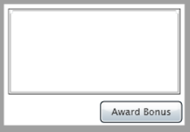
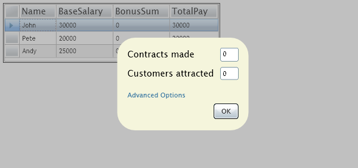
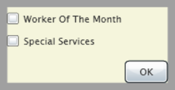

Tasks interaction
The source code of this example can be found under "Examples\TasksInteraction\" subfolder
of the MVC# root folder. Silverlight presentation project is in the "Examples\TasksInteraction\Presentation\Silverlight"
folder. The framework itself can be downloaded from www.MVCSharp.org/download.aspx.
Introduction
Application logic
Main Task
Employees Controller
Award Bonus Task
Award Bonus Main Controller
Advanced Options Controller
Presentation
Employees view
Bonus award views
Conclusion
Introduction
Nowadays user interfaces become more and more complex. And with the appearance of
RIA (rich Internet application) technologies (e.g. Silverlight) even Web interfaces
are gaining considerable complexitiy. A good way of fighting against this complexity
is using architectural patterns, such as Model-View-Presenter.
In my previous article
(read it up to the "Presentation" section prior to going on with this atricle) we
have got acquainted with MVC# - a framework which
simplifies the usage of the Model-View-Presenter pattern by developers. There we have concerned an execution of a single task and have discussed interaction between
task's views, its controllers and the task object itself. But one important question
left uncovered is how two or more tasks interact with each other. This article considers
an example of communication between tasks in MVC# Framework. The presentation platform we are using in this example is a brand
new Silverlight 2.0 (which is supported by MVC# starting from version 0.8).
Application logic
The example we concern here deals with a list of employees and allows to award
a bonus to each employee. Bonus awarding procedure requires entering several options
which determine the resulting bonus sum.
We will construct the application of two tasks: one for browsing through the list
of employees (main task), the other for awarding a bonus to a particular employee
(bonus award task).
Main Task
Main task will include a single view showing a list of employees, which will be
activated on the task start:
public class MainTask : TaskBase
{
[IPoint(typeof(EmployeesController))]
public const string Employees = "Employees";
public override void OnStart(object param)
{
Navigator.NavigateDirectly(Employees);
}
}
Besides a list of employees the employees view will contain a button (or menu item
or whatever else) for starting a bonus award task. However the employees view will
not start this task itself. Instead, according to the MVP pattern, this work should
be delegated to the associated EmployeesController instance.
Employees Controller
As decided above the Employees controller class should contain a method (say, AwardBonus())
for starting a bonus award task. For this task to execute, it needs to know the
employee to be awarded. That is why we pass the current employee object to the task
starting procedure:
public class EmployeesController : ControllerBase
{
public void AwardBounus()
{
Employee currEmpl = (View as IEmployeesView).CurrentEmployee;
Task.TasksManager.StartTask(typeof(AwardBonusTask), currEmpl);
}
}
After finishing its execution the bonus award task should return control to the main task.
Thus a reference to the main task should also be passed to the bonus award task:
public class EmployeesController : ControllerBase
...
public void AwardBounus()
{
Employee currEmpl = (View as IEmployeesView).CurrentEmployee;
Task.TasksManager.StartTask(typeof(AwardBonusTask),
new object[] { currEmpl, Task });
}
Next, we will discuss the AwardBonusTask class and corresponding controller classes.
Award Bonus Task
The bonus award task will have two views. The main view will have edit boxes to
choose some basic options and an "OK" button to award a bonus and return to the
main task. The second view will be used for entering advanced options:
public class AwardBonusTask : TaskBase
{
[IPoint(typeof(ABMainController), AdvancedOptionsView)]
public const string MainView = "Main View";
[IPoint(typeof(ABAdvancedOptionsController), MainView)]
public const string AdvancedOptionsView = "Advanced Options View";
}
When started, the bonus award task receives the employee to be awarded and the originating
task as input parameters. These parameters are then stored in the task's public
fields. After that the main view gets activated:
public class AwardBonusTask : TaskBase
...
public Employee Employee;
public ITask OriginatingTask;
public override void OnStart(object param)
{
Employee = (param as object[])[0] as Employee;
OriginatingTask= (param as object[])[1] as ITask;
Navigator.NavigateDirectly(MainView);
}
Award Bonus Main Controller
In the bonus award main view when a user decides to award a bonus and clicks
"OK" the control should be passed to the ABMainController.DoAwardBonus() method.
This method calculates the bonus sum, assigns it to the employee and returns control
back to the main task:
public class ABMainController : ControllerBase
{
public void DoAwardBonus()
{
int contractsMade = (View as IABMainView).ContractsMade;
int customersAttracted = (View as IABMainView).CustomersAttracted;
decimal baseSalary = (Task as AwardBonusTask).Employee.BaseSalary;
decimal workerOfTheMonthBonus =
(Task as AwardBonusTask).IsWorkerOfTheMonth ? baseSalary * .10m : 0;
decimal specialServicesBonus =
(Task as AwardBonusTask).SpecialServices ? baseSalary * .5m : 0;
(Task as AwardBonusTask).Employee.SetBonusSum(contractsMade * 15000m +
customersAttracted * 15000m + workerOfTheMonthBonus +
specialServicesBonus);
(Task as AwardBonusTask).OriginatingTask.OnStart(null);
}
}
Here we do not need to pass anything back to the main task. In more complicated
situations, however, the originating task's behavior might depend on parameters
passed back to it by nested tasks.
A few changes should also be made to the MainTask class. The point is that Navigator.NavigateDirectly(...)
would not activate a view if it is already marked as current for the task. That
is why calling MainTask.OnStart(...) will have no effect if returning back to the
main task. Instead, we should use Navigator.ActivateView(...), it will activate
a view even if it is current for the task.
public class MainTask : TaskBase
...
public override void OnStart(object param)
{
Navigator.NavigateDirectly(Employees);
Navigator.ActivateView(Employees);
}
As we can see tasks communication is done by simply invoking task start methods
with necessary parameters. For existing task instances we use Task.OnStart(...)
method, for new tasks TasksManager.StartTask(...) is used.
Advanced Options Controller
This controller simply saves options entered in the advanced options view to the
task's public fields, and then navigates back to the main award bonus view:
public class ABAdvancedOptionsController : ControllerBase
{
public void DoEnterOptions()
{
(Task as AwardBonusTask).IsWorkerOfTheMonth = (View as
IABAdvancedOptionsView).IsWorkerOfTheMonth;
(Task as AwardBonusTask).SpecialServices = (View as
IABAdvancedOptionsView).SpecialServices;
Task.Navigator.Navigate(AwardBonusTask.MainView);
}
}
Presentation
Employees view
Views for Silverlight platform should inherit the UserControlView class.
Therefore firstly we will create an empty UserControlView descendant using the following
XAML markup:
<mvc:UserControlView xmlns:my=
"clr-namespace:System.Windows.Controls;assembly=System.Windows.Controls.Data"
x:Class=
"MVCSharp.Examples.TasksInteraction.Presentation.Silverlight.EmployeesView"
xmlns="http://schemas.microsoft.com/client/2007"
xmlns:x="http://schemas.microsoft.com/winfx/2006/xaml"
xmlns:mvc="clr-namespace:MVCSharp.Silverlight;assembly=MVCSharpSL">
<Grid x:Name="LayoutRoot" Background="White">
</Grid>
</mvc:UserControlView>
Then we should add a data grid to show the list of employees and an "Award Bonus"
button:

<mvc:UserControlView ... >
<Grid x:Name="LayoutRoot" Background="White">
<Grid.RowDefinitions>
<RowDefinition Height="Auto"/>
<RowDefinition Height="Auto"/>
</Grid.RowDefinitions>
<Grid.ColumnDefinitions>
<ColumnDefinition Width="Auto"/>
<ColumnDefinition/>
</Grid.ColumnDefinitions>
<my:DataGrid x:Name="EmployeesGrid" MinWidth="200" MinHeight="100"
Grid.Row="0" Grid.Column="0" Margin="5"
SelectionMode="Single" HorizontalAlignment="Left"/>
<Button Width="95" Height="25" HorizontalAlignment="Right" Grid.Row="1"
Content="Award Bonus" Margin="3" Click="AwardBonusButton_Click"/>
</Grid>
Note that we are using a layout with two columns so that the view occupies the entire
window space. Otherwise the contents of underlying views can become visible, which
is unwanted.
The "Award Bonus" button handler will do nothing but delegate processing to the
appropriate controller's method. As for the IEmployeesView implementation,
it is very straightforward as seen from the code below:
public partial class EmployeesView : UserControlView, IEmployeesView
..
private void AwardBonusButton_Click(object sender, RoutedEventArgs e)
{
(Controller as EmployeesController).AwardBounus();
}
public Employee CurrentEmployee
{
get { return EmployeesGrid.SelectedItem as Employee; }
set { EmployeesGrid.SelectedItem = value; }
}
public void SetEmployeesList(List<Employee> employees)
{
EmployeesGrid.ItemsSource = employees;
}
We will also reload the grid's data on the view activation:
public partial class EmployeesView : UserControlView, IEmployeesView
...
public override void Activate(bool activate)
{
if (activate) UpdateEmployeesGrid();
}
private void UpdateEmployeesGrid()
{
object selItm = EmployeesGrid.SelectedItem;
IEnumerable employees = EmployeesGrid.ItemsSource;
EmployeesGrid.ItemsSource = null;
EmployeesGrid.ItemsSource = employees;
EmployeesGrid.SelectedItem = selItm;
}
Last thing required here is to associate the created view class with the "Employees"
view. We achieve it by applying the [View] attribute to the view class:
[View(typeof(MainTask), MainTask.Employees)]
public partial class EmployeesView : UserControlView, IEmployeesView
...
That is all with the employees view. Next we will design two views for the bonus
award task.
Bonus award views
First, let us design the award bonus main view. As above, we will start with an
empty UserControlView descendant:
<mvc:UserControlView xmlns:my=
"clr-namespace:System.Windows.Controls;assembly=System.Windows.Controls.Data"
x:Class=
"MVCSharp.Examples.TasksInteraction.Presentation.Silverlight.ABMainView"
xmlns="http://schemas.microsoft.com/client/2007"
xmlns:x="http://schemas.microsoft.com/winfx/2006/xaml"
xmlns:mvc="clr-namespace:MVCSharp.Silverlight;assembly=MVCSharpSL"
xmlns:TI=
"clr-namespace:MVCSharp.Examples.TasksInteraction.Presentation.Silverlight">
<Grid>
</Grid>
</mvc:UserControlView>
The view will look as a rounded dialog box on a semi-transparent background:

<mvc:UserControlView ...>
<Grid>
<Rectangle HorizontalAlignment="Stretch" VerticalAlignment="Stretch"
Opacity="0.5" Fill="Gray"/>
<Border CornerRadius="30" Background="Beige" Width="220" Height="155">
<Grid Margin="15, 15, 15, 15">
<Grid Margin="2,2,2,0">
<Grid.RowDefinitions>
<RowDefinition Height="Auto"/>
<RowDefinition Height="Auto"/>
<RowDefinition Height="Auto"/>
<RowDefinition Height="Auto"/>
</Grid.RowDefinitions>
<Grid.ColumnDefinitions>
<ColumnDefinition Width="Auto"/>
<ColumnDefinition/>
</Grid.ColumnDefinitions>
<TextBlock Grid.Row="0" Text="Contracts made"/>
<TextBox x:Name="ContractsMadeEdit" Grid.Row="0" Width="30"
Grid.Column="1" HorizontalAlignment="Right" Text="0"/>
<TextBlock Grid.Row="1" Text="Customers attracted"
VerticalAlignment="Center"/>
<TextBox x:Name="CustAttractedEdit" Width="30" Grid.Row="1"
Grid.Column="1" HorizontalAlignment="Right" Text="0"
Margin="0,10,0,10"/>
<HyperlinkButton x:Name="AdvancedOptionsBtn"
Grid.ColumnSpan="2" Content="Advanced Options"
Grid.Row="2" Click="AdvancedOptsBtn_Click"/>
<Button x:Name="OkBtn" Grid.Row="3" Grid.Column="1"
Content="OK" Click="OkBtn_Click"/>
</Grid>
<TI:ABAdvancedOptionsView ViewName="Advanced Options View"
Visibility="Collapsed"/>
</Grid>
</Border>
</Grid>
</mvc:UserControlView>
The advanced options view will be shown inside the award bonus main view, in the
rounded dialog box. That is why the markup above contains the <TI:ABAdvancedOptionsView
...> element. It should be hidden at first (Visibility="Collapsed") and its name
should be specified (ViewName="Advanced Options View") for the framework to properly
identify it.
Below is the advanced options view markup:

<mvc:UserControlView xmlns:my=
"clr-namespace:System.Windows.Controls;assembly=System.Windows.Controls.Data"
x:Class=
"MVCSharp.Examples.TasksInteraction.Presentation.Silverlight.ABAdvancedOptionsView"
xmlns="http://schemas.microsoft.com/client/2007"
xmlns:x="http://schemas.microsoft.com/winfx/2006/xaml"
xmlns:mvc="clr-namespace:MVCSharp.Silverlight;assembly=MVCSharpSL">
<Grid Background="Beige">
<Grid.RowDefinitions>
<RowDefinition/>
<RowDefinition/>
<RowDefinition/>
</Grid.RowDefinitions>
<Grid.ColumnDefinitions>
<ColumnDefinition Width="Auto"/>
<ColumnDefinition/>
</Grid.ColumnDefinitions>
<CheckBox x:Name="WorkerOfTheMonthCB" Grid.Row="0"
Content="Worker Of The Month"/>
<CheckBox x:Name="SpecialServicesCB" Grid.Row="1"
Content="Special Services"/>
<Button Grid.Row="2" Width="50" Margin="0,10,0,0" Grid.Column="1"
Content="OK" Click="OkBtn_Click"/>
</Grid>
</mvc:UserControlView>
Now let us turn attention to the views' code-behind files. The award bouns main
view class should implement the IABMainView interface and should handle the "Advanced Options"
link and the "OK" button clicks. As before, we also use the [View] attribute for
registrating the view:
[View(typeof(AwardBonusTask), AwardBonusTask.MainView)]
public partial class ABMainView : UserControlView, IABMainView
...
public int ContractsMade
{
get { return Convert.ToInt32(ContractsMadeEdit.Text); }
set { ContractsMadeEdit.Text = value.ToString(); }
}
public int CustomersAttracted
{
get { return Convert.ToInt32(CustAttractedEdit.Text); }
set { CustAttractedEdit.Text = value.ToString(); }
}
private void OkBtn_Click(object sender, RoutedEventArgs e)
{
(Controller as ABMainController).DoAwardBonus();
}
private void AdvancedOptsBtn_Click(object sender, RoutedEventArgs e)
{
(Controller as ABMainController).ShowAdvancedOptions();
}
The advanced options view class should implement the IABAdvancedOptionsView interface
and should handle the "OK" button click. Moreover it should hide itself each time it is
deactivated to reveal the parent view controls. Since we have explicitly placed
this view inside the award bonus main view (see the XAML of the award bonus main
view above), the [View] attribute is not required here:
public partial class ABAdvancedOptionsView : UserControlView, IABAdvancedOptionsView
...
public override void Activate(bool activate)
{
if (!activate) Visibility = Visibility.Collapsed;
}
public bool IsWorkerOfTheMonth
{
get { return (bool)WorkerOfTheMonthCB.IsChecked; }
set { WorkerOfTheMonthCB.IsChecked = value; }
}
public bool SpecialServices
{
get { return (bool)SpecialServicesCB.IsChecked; }
set { SpecialServicesCB.IsChecked = value; }
}
private void OkBtn_Click(object sender, RoutedEventArgs e)
{
(Controller as ABAdvancedOptionsController).DoEnterOptions();
}
Finally, we should write the application startup method. Inside it the main task
should be started, obviously:
public partial class App : Application
...
public App()
{
this.Startup += this.Application_Startup;
InitializeComponent();
}
private void Application_Startup(object sender, StartupEventArgs e)
{
TasksManager tasksManager = new TasksManager(SilverlightViewsManager.
GetDefaultConfig());
tasksManager.StartTask(typeof(MainTask));
}
Conclusion
Tasks interaction in MVC# is no harder than an ordinary interaction between two
objects: one tasks just passes needed data to the other task's OnStart(...) method
(either directly or by calling TasksManager.StartTask(...) if the task instance
does not exist yet). Using MVC# with Silverlight platform is easy as well: everything
needed is to design view classes, just like for other presentation platforms (Windows
and ASP.NET forms).
The source code of this example can be found under "Examples\TasksInteraction\" subfolder
of the MVC# root folder. Silverlight presentation project is in the "Examples\TasksInteraction\Presentation\Silverlight"
folder. The framework itself can be downloaded from www.MVCSharp.org/download.aspx.